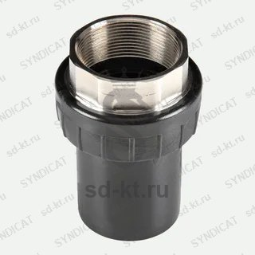

Концевое соединение 63 мм с внутренней резьбой + "американка"
Артикул: 0600
UPP- пластиковый трубопровод для нефтепродуктов
Раздел: Пластиковый трубопровод для АЗС · АЗС
Цена и наличие — по запросу. Поставляем оригинал и аналоги. Доставка по России.
Модификации и размеры (2)
- Концевое соединение 63 мм с внутренней резьбой + "американка" · арт. 0600
- Концевое соединение 32 мм с внутренней резьбой + "американка" · арт. 0605
Подберём нужный вариант — уточните при запросе.
Описание
Концевое соединение 63 мм с внутренней резьбой + "американка" производства UPP- пластиковый трубопровод для нефтепродуктов — позиция из раздела «Пластиковый трубопровод для АЗС» для АЗС. Компания SYNDICAT поставляет оборудование и комплектующие для автозаправочных и газозаправочных станций по всей России. Цена и наличие «Концевое соединение 63 мм с внутренней резьбой + "американка"» — по запросу: оставьте заявку или позвоните, подберём оригинал или аналог и рассчитаем доставку.